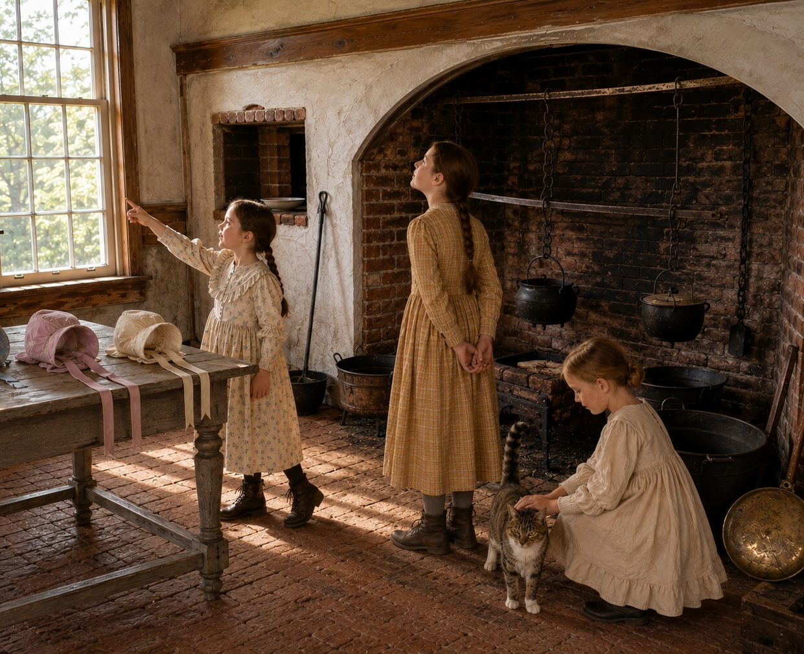

Pownalborough Court House
The Kitchen Fireplace
This large open hearth was the center of food preparation in the courthouse kitchen. Before the introduction of a modern stove, heat came directly from the fire, and cooks controlled the placement of pots with an iron crane mounted inside the fireplace.
How the crane worked
The crane could swing across the hearth or outward toward the room. A pot suspended from the crane could be moved closer to or farther from the fire, making it easier to adjust the heat or remove a heavy vessel without reaching directly over the flames.
Look closely
- Find where the crane is attached to the inside wall of the fireplace.
- Notice how the hanging pot can be positioned over different parts of the fire.
- Compare the size of the hearth with a modern kitchen stove.
- Look for the areas where ash and embers would have been managed.
See the reconstruction

About this interpretation
This page is intended to help visitors understand how the surviving fireplace and crane could have been used. Historical interpretation combines surviving architectural features, documentary evidence, comparable period practices, and clearly identified reconstruction.
A fuller source list and additional interpretation can be added as this prototype develops.